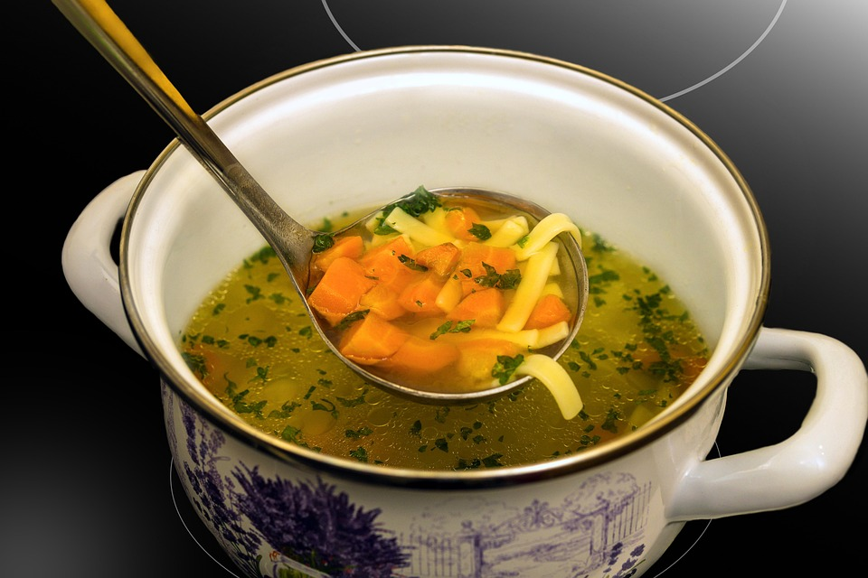
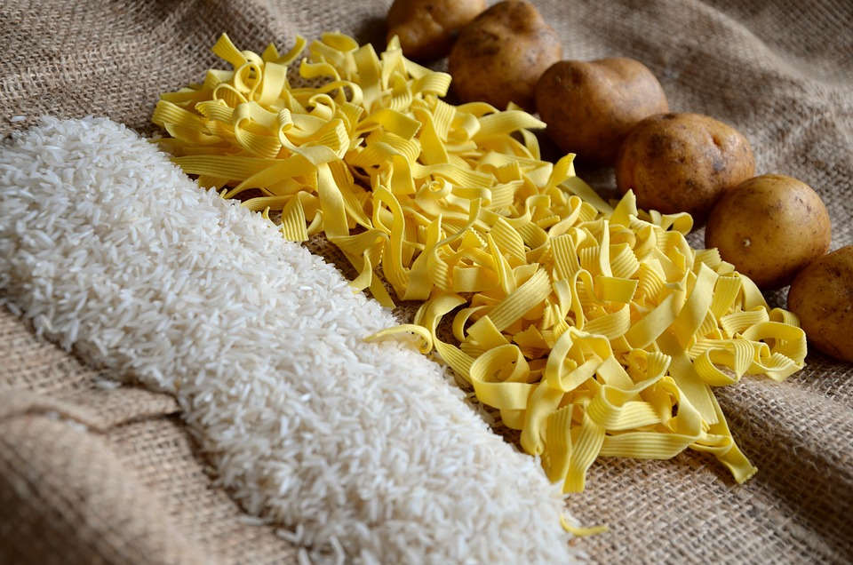

Simple Soup Ingedients (Quick and Easy)
Low-Effort Meals

"Simple soup" is what I call a basic broth mixture that you can make with only a few ingedients or variants thereof. I find it a good "recipe" to know for days where you cannot cook but want to eat more than something pre-made, cold, or raw.
Broth

I usually start with basic, low-sodium chicken broth, though seafood or mushroom broth works fine. There will be no measurements in this recipe because I think it is important to have a recipe you can "eyeball", or just add in portions that "feel right" to you. While it may be strange, I find that having something like this on days where you are depressed or too tired to get proper measuring tools really helps you still have the energy to eat something.
Additions

I usually forego vegetables for simple soup since they usually involve peeling, cutting, or roasting, when this is meant to be a low-effort, low-time investment dish. If you want some added flavor, however, turn to the three best things you can add to a soup: sliced green onions, garlic, or ginger. These will add a deeper, more rich flavor in any amount you add. If I have some on hand, I'll also add some soy sauce and sesame oil, as well as canned white chicken.
Noodles or Rice

The addition of noodles or rice is important to this recipe, because they give you actual substance in your dish that can help fill your stomach. I usually use basic buckwheat or egg noodles, though if you have extra time you can use rice instead. Both work, though rice is better if you want to have something you can chew more than soup. This is another portion that you can just eyeball; use as much as you think is needed. On particularly desperate days, I'll use a pre-cooked block of instant ramen.
Process

Heat a pot of water with the amount of noodles you want or start your rice cooker. While those boil/steam, add the broth and additions to your bowl and mix. When the noodles or rice are done, drain and mix into your broth, and that's it. It's a quick and easy recipe with no need for measuring for hard days or when you are too exhausted to do anything else but slap things together.
Image Sources